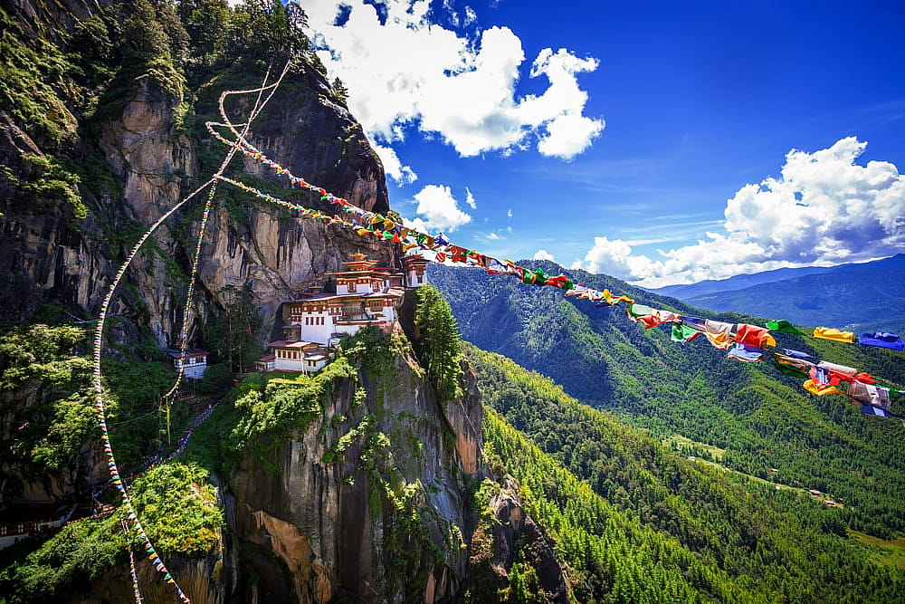

Welcome to Our Travel Website
Discover amazing destinations and book your next trip with us.
Book NowPopular Destinations
DO COME & VISIT |

Arunachal Pradesh
Arunachal Pradesh, known as the "Land of the Rising Sun," offers breathtaking landscapes and cultural richness. Visit Tawang to witness the majestic Tawang Monastery and Sela Pass. Explore Ziro Valley for its lush greenery and unique Apatani culture. Discover Namdapha National Park for its diverse flora and fauna.
Assam
Assam, known for its lush tea gardens and rich biodiversity, offers a myriad of enchanting tourist destinations. Kaziranga National Park, a UNESCO World Heritage Site, is famed for its population of one-horned rhinoceroses and diverse wildlife. Majuli, the largest river island in the world, is a cultural hotspot with vibrant festivals and serene landscapes. The Kamakhya Temple in Guwahati, dedicated to the Hindu goddess Kamakhya, attracts pilgrims and tourists alike with its mystical aura. Sivasagar, the ancient capital of the Ahom Kingdom, showcases architectural marvels like the Rang Ghar and Talatal Ghar. Assam promises a tapestry of experiences amidst its scenic beauty.

Manipur
Manipur, nestled in the northeastern part of India, boasts a rich tapestry of culture, history, and natural beauty. Imphal, the capital city, is a vibrant hub known for its serene Loktak Lake, the largest freshwater lake in Northeast India. The historic Kangla Fort offers insights into Manipur's royal past. The Keibul Lamjao National Park is renowned for being the world's only floating national park and home to the endangered brow-antlered deer, Sangai. Other attractions include the picturesque Sendra Island, the ancient Shree Govindajee Temple, and the quaint village of Moirang, steeped in WWII history. Manipur promises a captivating blend of experiences for every traveler.

Meghalaya
Meghalaya, known as the "Abode of Clouds," offers breathtaking landscapes and unique experiences. Explore the living root bridges of Cherrapunji, marvels of organic engineering woven by indigenous tribes over centuries. Visit Mawlynnong, Asia's cleanest village, nestled amidst lush greenery and adorned with indigenous Khasi culture. Dive into the depths of the mysterious Siju Cave, home to awe-inspiring stalactite formations. Trek to the cascading Nohkalikai Falls, one of India's tallest waterfalls, plunging into a verdant valley. Experience tranquility at Umiam Lake, a serene reservoir surrounded by emerald hills. Meghalaya promises an unforgettable journey into nature's lap, filled with wonder and adventure.

Mizoram
Mizoram, nestled in the northeastern part of India, offers serene landscapes and rich cultural experiences. Among its captivating attractions is Aizawl, the capital city, known for its vibrant markets and picturesque views from Durtlang Hills. The state boasts lush greenery and breathtaking waterfalls like Vantawng Falls, cascading from a height of over 750 feet. Experience the tranquility of Tamdil Lake, perfect for boating amidst scenic surroundings. Immerse yourself in the unique cultural heritage at Reiek Tlang, where traditional Mizo huts and handicrafts showcase the local way of life. Mizoram promises an unforgettable journey blending natural wonders with cultural charm.

Nagaland
Nagaland, nestled in the northeastern part of India, boasts of captivating tourist destinations rich in culture and natural beauty. Among its prominent attractions is the Hornbill Festival, a celebration of Naga culture showcasing traditional dances, music, and indigenous crafts. The vibrant capital city of Kohima offers a glimpse into Nagaland's history through sites like the World War II Cemetery and the Kohima State Museum. Dzukou Valley, often referred to as the "Valley of Flowers," entices with its picturesque landscapes and trekking trails. Meanwhile, the mystical village of Khonoma offers insights into sustainable living practices and Naga traditions.

Sikkim
Sikkim, nestled in the lap of the Himalayas, boasts breathtaking landscapes and vibrant culture. Start your journey with the serene Tsomgo Lake, surrounded by snow-capped peaks. Marvel at the ancient Rumtek Monastery, a center of Tibetan Buddhism. Explore the capital city of Gangtok, with its bustling markets and panoramic views from Ganesh Tok and Tashi Viewpoint. Journey to the ethereal Yumthang Valley, known as the Valley of Flowers, especially stunning during the spring bloom. Don't miss the enchanting Pelling, offering stunning views of Kanchenjunga and the sacred Pemayangtse Monastery. Sikkim promises an unforgettable blend of natural beauty and spiritual serenity.

Tripura
Tripura, nestled in the northeastern part of India, boasts a rich cultural heritage and natural beauty. Visitors can explore the Ujjayanta Palace, a magnificent royal residence turned museum, showcasing artifacts and insights into Tripura's history. Neermahal, the water palace located in the middle of Rudrasagar Lake, offers a glimpse into the region's architectural marvels. Pilak, an archaeological site, features ancient ruins and sculptures dating back to the 8th and 9th centuries. The Sepahijala Wildlife Sanctuary provides a chance to observe diverse flora and fauna. Additionally, the Jampui Hills offer breathtaking views and a serene escape into nature's tranquility.
Featured Hotels

Mayfair Spring Valley
Experience Best Hospitality, Amenities & Services. Early check-in, Airport Transfer, Complimentary Food or Room Upgrade, located at Tepesia , Kamarkuchi , Sonapur, Guwahati.

Polo Orchid Resort
Enjoy the evening at Sky Grill serving delectable appetizers and beverages. Swim a few laps in the expansive infinity pool overlooking the misty hills, located in the Nohsithiang village on a clifftop estate, Polo Orchid lets you unwind with views of a misty landscape.

Vivanta Arunachal Pradesh
Indulge in luxury at Vivanta Arunachal Pradesh, Tawang a historic landmark hotel renowned for its elegance and sophistication.
Featured Activities

Kaziranga National Park
Experience luxury accommodations and impeccable service at the Kaziranga-national-park, located in the Golaghat and Nagaon districts of the state of Assam, India.

Siju Dobakkol(Siju Cave)
Siju Dobakkol (Siju Cave), is also known as Bat Cave, it is by far the most well-known cave in India. It is located in the North East Indian state of Meghalaya near the Napak Lake and Simsang River game reserve.
-pw39g.jpg)
Saramati Peak
Standing at an altitude of 3841 m, Saramati is the highest peak in the state of Nagaland and occupies a place of pride in the heart of its residents. This peak is located on the Nagaland-Myanmar border and the closest village to the base of this peak is Thanamir in Kiphire district of Nagaland, close to 35 km from the village of Pungro.
About Us
Our company is dedicated to providing the best travel experiences to our customers. We specialize in creating custom itineraries that cater to each individual's interests and preferences.

Oggy
Founder & CEO

Jack
Head of Operations
Contact Us
If you have any questions or would like to book a trip, please fill out the form below or contact us using the information provided.
- Guwahati, NORTH EAST INDIA
- info@travelcompany.com
- 555-123-4567